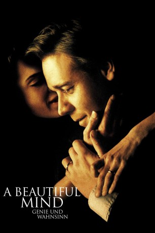

#217 A Beautiful Mind - Genie und Wahnsinn
Alternativ: A Beautiful Mind
Auszeichnungen: 4 Oscars gewonnen für 4 Oscars nominiert 4 GoldenGlobes gewonnen 2 BAFTA-Awards gewonnen
 
 IMDB-Wertung: 8.2 / 10
IMDB-Wertung: 8.2 / 10  IMDB-TOP-Platzierung: 141
IMDB-TOP-Platzierung: 141  Metascore: 72
Metascore: 72 
Princeton Universität, 1947: Der hoch begabte, aber äußerst exzentrische John Nash sucht fieberhaft, fast krankhaft besessen, nach einer revolutionierenden Theorie in der Mathematik. Er schert sich wenig um seine Kommilitonen und die Konventionen der Universität. Und tatsächlich macht er eines Tages die alles entscheidende Entdeckung. Mit seiner Karriere geht es fortan steil bergauf, und Nash bekommt eine Stelle als Forscher und Dozent. Da er zudem die außergewöhnliche Fähigkeit besitzt, innerhalb weniger Sekunden komplexe Codes zu knacken, übernimmt er immer häufiger Decodier-Aufgaben für den amerikanischen Geheimdienst. Doch der Stress, die Gefahr und die Heimlichkeiten seiner Tätigkeit fordern ihren Tribut: John leidet zunehmend unter Verfolgungswahn und wittert ständig Verschwörungen. Die erschütternde Diagnose: paranoide Schizophrenie. John droht alles zu verlieren: seine geliebte Frau, seinen Job und seinen Verstand…
Jahr: 2001
Dauer: 135 Minuten
FSK: 12
Land: USA Studio: Universal PicturesTonspuren: DD5.1 - ,
Untertitel: Deutsch, Englisch,
Auflösung: 1080p (1920×1040) Größe: 8581 MB
Genre: Biographie, Drama
Regisseur:  Ron Howard
Ron Howard
Drehbuch: Akiva Goldsman, Sylvia Nasar
Soundtrack: James Horner
Darsteller:
 Russell Crowe als John Nash
Russell Crowe als John Nash Ed Harris als Parcher
Ed Harris als Parcher Jennifer Connelly als Alicia Nash
Jennifer Connelly als Alicia Nash Christopher Plummer als Dr. Rosen
Christopher Plummer als Dr. Rosen Paul Bettany als Charles
Paul Bettany als Charles Adam Goldberg als Sol
Adam Goldberg als Sol Josh Lucas als Hansen
Josh Lucas als Hansen Anthony Rapp als Bender
Anthony Rapp als Bender Jason Gray-Stanford als Ainsley
Jason Gray-Stanford als Ainsley Judd Hirsch als Helinger
Judd Hirsch als Helinger Austin Pendleton als Thomas King
Austin Pendleton als Thomas King- Vivien Cardone als Marcee
- Jillie Simon als Bar Co-Ed
 Tanya Clarke als Becky
Tanya Clarke als Becky- Thomas F. Walsh als Captain
- Roy Thinnes als Governor
 Cheryl Howard als Harvard Administrator
Cheryl Howard als Harvard Administrator Rance Howard als White-Haired Patient
Rance Howard als White-Haired Patient Jane Jenkins als Code-Red Nurse
Jane Jenkins als Code-Red Nurse Josh Pais als Princeton Professor
Josh Pais als Princeton Professor Michael Esper als John Nash Jr. - Young Man
Michael Esper als John Nash Jr. - Young Man- Jennifer Weedon als Brunette
- Tom McNutt als Pen Ceremony Professor
- Matt Samson als Princeton Student
 Stelio Savante als Technician
Stelio Savante als Technician Michael Abbott Jr. als Princeton Library Tutor , uncredited
Michael Abbott Jr. als Princeton Library Tutor , uncredited- Liche Ariza als Princeton Student , uncredited
 Michael Arthur als Army Captain , uncredited
Michael Arthur als Army Captain , uncredited- Reggie Austin als Pen Ceremony Professor , uncredited
 Fileena Bahris als Student , uncredited
Fileena Bahris als Student , uncredited- Sean Bennett als Student , uncredited
- Cade Bittner als Harvard Student , uncredited
 James Thomas Bligh als Nobel Prize Attendee , uncredited
James Thomas Bligh als Nobel Prize Attendee , uncredited- Peter Bonilla als Princeton Student , uncredited
- Rich Bryant als College Student , uncredited
- Dan Chen als Nobel Prize Ceremony Guest , uncredited
- Phil Cirincione als MIT Student , uncredited
- Scott Addison Clay als MIT Student , uncredited
 Ty Copeman als Doctor , uncredited
Ty Copeman als Doctor , uncredited- Berly Ellis als Princeton Tutor '78 , uncredited
- Scott Fernstrom als Trent Humphres , uncredited
- Todd Fredericks als Man at Gouverners Ball , uncredited
- Evan Hart als Princeton Student , uncredited
- Jason Horton als Princeton Student , uncredited
 Bryce Dallas Howard als Harvard Student , uncredited
Bryce Dallas Howard als Harvard Student , uncredited Ron Howard als Man at Governors' Ball , uncredited
Ron Howard als Man at Governors' Ball , uncredited Alex Lorre als Technician , uncredited
Alex Lorre als Technician , uncredited- Dory Manzour als Princeton Student , uncredited
 Robert Myers als Professor , uncredited
Robert Myers als Professor , uncredited Charles Pendelton als Bartender , uncredited
Charles Pendelton als Bartender , uncredited
Datei: X:\2001\Beautiful Mind - Genie und Wahnsinn, A (2001, FSK12, 1920x1040).mkv seit 14.02.2015
Festplatte: HD 1996-2002
 Es gibt insgesamt 102 Filme in der Gruppe '2001'
Es gibt insgesamt 102 Filme in der Gruppe '2001'